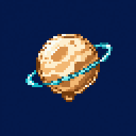

Un universo por coleccionar.
Preparando el juego…
Tu colección se guarda en este dispositivo.
Respaldo e informe: Ajustes → Partida.
Alfa 0.17.1
Astro Pins se juega con el teléfono de pie.
La partida queda en pausa.
En iPhone podés activar el bloqueo vertical desde el Centro de control.